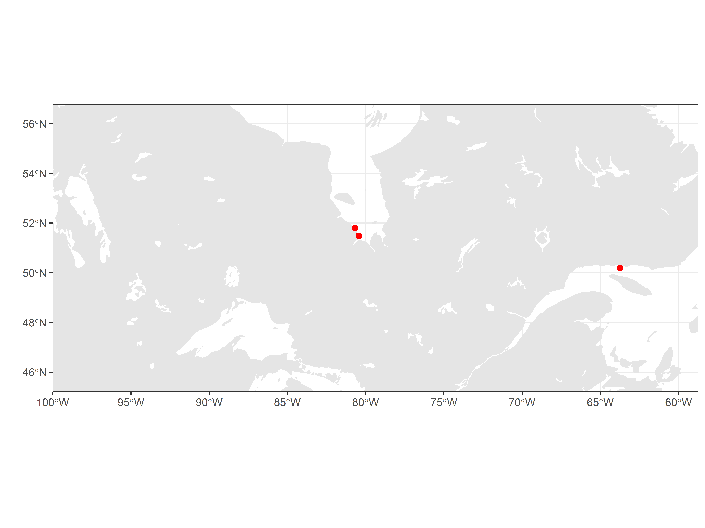
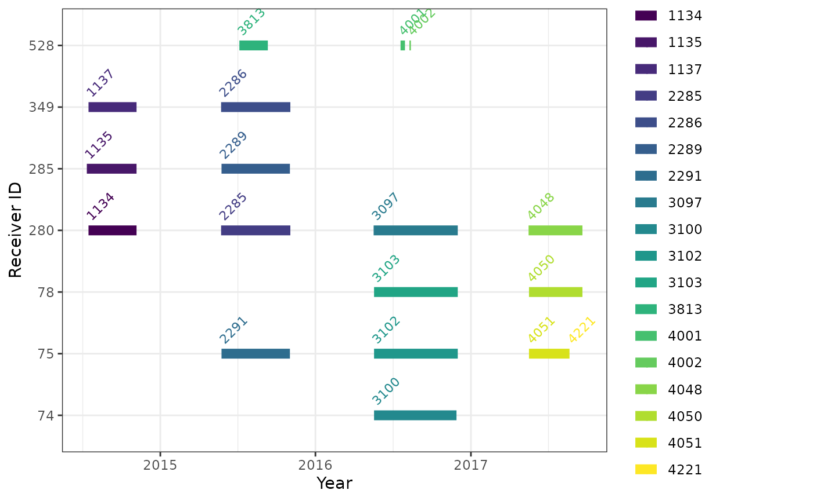
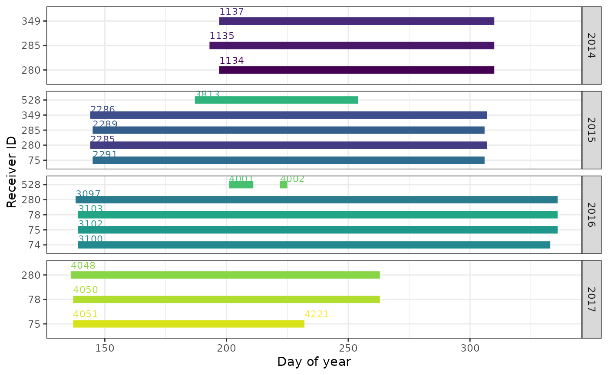
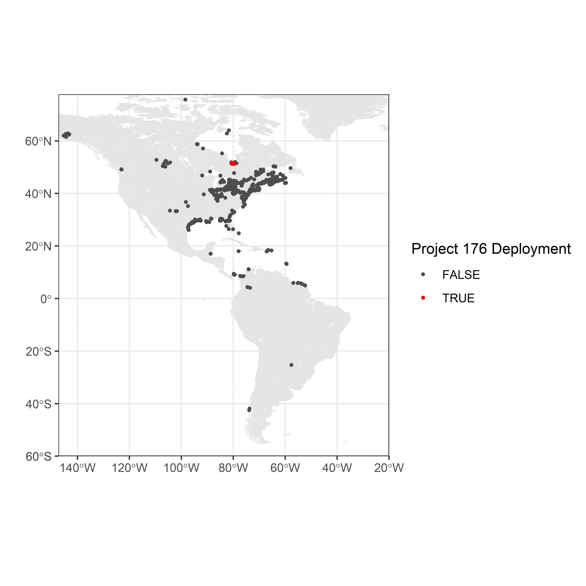
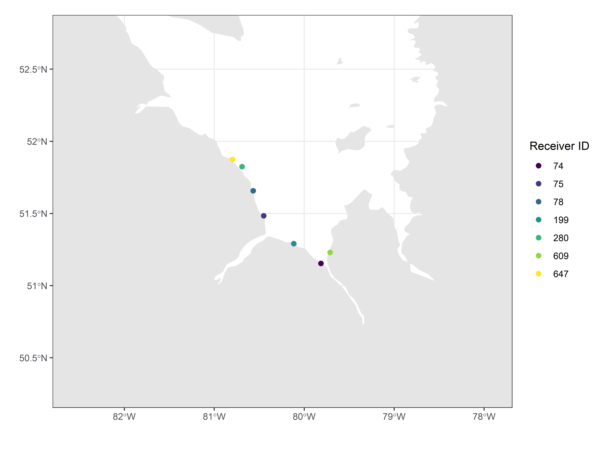

Chapter 4 - Tag and receiver deployments
Source :vignettes/articles/04-deployments.Rmd
04-deployments.RmdIn this chapter, we’ll go through checking retrieving and checking tag and receiver deployments. We’ll summarize and visualize as we go to check for problems before we start more detailed data cleaning in Chapter 5.
Before working with your detection data, a first step is to summarize and visualize the metadata for tag and receiver deployments registered to your project. Summarizing and plotting your deployments can be an effective way to find any errors in tag or receiver deployment metadata, which can in turn influence the completeness of the detections data for your project and the projects of others with detections of their own tags on your receivers.
This chapter is a complement to the online ‘Data Issues’ page (visit the Motus website, log in and view the ‘Data Issues’ page under ‘Manage Data’), which provides each project with a list of metadata issues (missing or outlying values) to be accepted or ignored. As such, please address any and all errors associated with your project on the ‘Data Issues’ page before importing your data through R. This chapter does not provide a full check of your deployment metadata, but will help uncover errors that have been missed by the automatic queries on the ‘Data Issues’ page.
We use the James Bay Shorebird Project sample dataset throughout this chapter. As you run through the code to look at your own deployments, please fix any errors or omissions in your metadata by signing in to https://motus.org/, and under the ‘Manage Data’ tab, select either ‘Manage Tags’ to fix tag deployment metadata or ‘Manage Receivers’ to fix receiver deployment metadata. It is important to fix metadata errors online, so that errors are fixed at the source and archived on the Motus Server, ensuring all users have access to the correct tag and receiver metadata. Metadata corrected online will automatically be corrected in your detection files. If you have already downloaded your detection data, you can update detections and metadata.
Setup
Before we begin working with data, we need to load the required packages for this chapter. If you have not yet installed these packages (from GitHub or CRAN) then please return to Chapter 2 - Installing packages.
Load .motus file
This chapter assumes that the .motus file has already been downloaded, if you have not done so please return to Chapter 3 - Accessing detections data. To update and load the existing file into R, use tagme(), you may have to login with the username and password ‘motus.sample’.
sql.motus <- tagme(176, update = TRUE, dir = "./data")## Checking for new data in project 176## Updating metadata## activity: 1 new batch records to check## batchID 1977125 (# 1 of 1): got 156 activity records## batchID 1977125 (# 1 of 1): got 0 activity records## Downloaded 156 activity records## nodeData: 0 new batch records to check## Fetching deprecated batches## Total deprecated batches: 6
## New deprecated batches: 0Tag deployments
In your .motus file, when using the tagme function, you are only provided with the metadata for any tags from your project with detections along with metadata for associated ambiguous tags from other projects, and receiver metadata for stations where your tags were detected.
Here we will:
- download full tag metadata for our project only
- determine how many tags are registered to your project
- determine how many of those registered tags were deployed
- determine location of tag deployments
- determine completeness and accuracy of tag deployment metadata
We will run through each of these in sequence.
Download full project tag metadata
Incomplete metadata or missing tag registrations can result in missing detection data. We therefore want to assess the completeness of all tags registered to our projects - not just tags for which we have detections. In order to to this we will use the metadata() function for project 176, described in more detail in Chapter 3.
metadata(sql.motus, projectIDs = 176)Number of registered tags
Now that we have complete tag metadata for our project, we can check the number of tags registered by loading the tags table in the .motus file. The tags table contains the metadata of each registered tag, including a unique tagID and information on manufacturer, model, nominal and offset frequency, burst interval, and pulse length. The tags table does not include deployment information. We select the metadata specific to the James Bay Shorebird Project, and ignore tag metadata associated with any duplicate tags belonging to other projects:
tbl.tags <- tbl(sql.motus, "tags")
df.tags <- tbl.tags %>%
filter(projectID == 176) %>%
collect() %>%
as.data.frame()The number of rows in the df.tags database is equivalent to the number of tags registered to the James Bay Shorebird Project in the sample dataset (i.e., 18 tags):
nrow(df.tags) # number of registered tags in the database## [1] 18You can view the motusTagIDs:
unique(df.tags$tagID)## [1] 16011 16035 16036 16037 16038 16039 16044 16047 16048 16052 17357 19129
## [13] 22867 22897 22902 22905 23316 23319If you are missing registered tags, please follow the instructions at https://motus.org/tag-registration/.
Number of registered tags that were deployed
The tag deployment metadata table (tagDeps) in the .motus file is required to check which registered tags have deployments. This file includes the date, time, species, and location of tag deployment. The database is subset to project ‘176’, and we use the anti_join() function to determine which registered tags have (or do not have) corresponding deployment information.
tbl.tagDeps <- tbl(sql.motus, "tagDeps")
df.tagDeps <- tbl.tagDeps %>%
filter(projectID == 176) %>%
collect() %>%
as.data.frame() %>% # once in df format, can format dates with lubridate
mutate(timeStart = as_datetime(tsStart),
timeEnd = as_datetime(tsEnd))
anti_join(df.tags, df.tagDeps, by = "tagID") ## [1] tagID projectID mfgID type codeSet
## [6] manufacturer model lifeSpan nomFreq offsetFreq
## [11] bi pulseLen
## <0 lignes> (ou 'row.names' de longueur nulle)In the sample data, there are no registered tags without deployment metadata, which suggests that all tags were deployed. If you have undeployed tags in your own files, please check your records to ensure this is the case; without deployment metadata, detections for registered but ‘undeployed’ tags will be missing from your detections database.
Number of deployments per tag
A tag might be deployed more than once, for example, if a previously deployed tag was recovered, and then later re-deployed on another individual. When tags are deployed more than once, the detections data should be considered independently for each deployment.
Throughout these articles we use the motusTagID as a unique identifier for a deployment. However, when a tag is deployed more than once, the motusTagID will remain consistent between deployments, and we instead need to use the tagDeployID, or combination of motusTagID and tagDeployID to distinguish which detections belong to which deployment.
Here, we check whether there are any tags with more than one deployment in the sample data (there are none), and then show you how to make a combined motusTagID/tagDeployID variable to use in place of the motusTagID if you have multiple deployments of a tag in your own data:
df.alltags <- tbl(sql.motus, "alltags") %>%
collect() %>%
as.data.frame() %>% # for all fields in the df (data frame)
mutate(time = as_datetime(ts))
df.alltags %>%
select(motusTagID, tagDeployID) %>%
filter(!(is.na(tagDeployID))) %>% # remove NA tagDeployIDs
distinct() %>%
group_by(motusTagID) %>%
mutate(n = n()) %>%
filter(n > 1)## # A tibble: 0 × 3
## # Groups: motusTagID [0]
## # … with 3 variables: motusTagID <int>, tagDeployID <int>, n <int>If you do have multiple deployments for a tag, we recommend creating a motusTagDepID to use in place of the motusTagID to define unique deployments of a tag. Moving forward, you would use motusTagDepID in place of motusTagID as you work through the rest of these articles:
Location of tag deployments
Creating a map of your tag deployments can point out any obvious errors in the tag deployment latitude or longitude that weren’t captured by the online metadata message centre queries.
a. Load base map files
Load base map files from the rnaturalearth package. You will need to have the rgdal and rgeos packages installed. The first time you run this code, you will need to download the lakes shapefiles. Like the tagme function, the destdir argument allows you to specify the directory where you would like to save these files; we have created a map-data folder within our working directory in this example:
world <- ne_countries(scale = "medium", returnclass = "sf")
lakes <- ne_download(scale = "medium", type = 'lakes', category = 'physical',
returnclass = "sf", destdir = "map-data") # only need this first time downloadingYou only need to download the shapefiles once. If you return to an analysis later and run code again, you can use the ne_load function because the shapefiles are already stored on your computer:
lakes <- ne_load(type = "lakes", scale = "medium", category = 'physical',
returnclass = "sf",
destdir = "map-data") # use this if already downloaded shapefilesb. Map the locations of tag deployments
Map the location of tag deployments for the sample data:
# set limits to map based on locations of detections, ensuring they include the
# deployment locations
xmin <- -100 #min(df.tagDeps$longitude, na.rm = TRUE) - 5
xmax <- max(df.tagDeps$longitude, na.rm = TRUE) + 5
ymin <- min(df.tagDeps$latitude, na.rm = TRUE) - 5
ymax <- max(df.tagDeps$latitude, na.rm = TRUE) + 5
# map using ggplot and sf
ggplot(data = world) +
geom_sf(colour = NA) +
geom_sf(data = lakes, colour = NA, fill = "white") +
coord_sf(xlim = c(xmin, xmax), ylim = c(ymin, ymax), expand = FALSE) +
labs(x = "", y = "") +
theme_bw() +
geom_point(data = filter(df.tagDeps, projectID == 176),
aes(longitude, latitude), size = 2, shape = 19, colour = "red")
If there are any errors in tag deployment location, please correct these online at https://motus.org/data/.
Check completeness and accuracy of tag deployment metadata
Required tag metadata includes deployment start date/time, end date/time (if applicable), deployment latitude, deployment longitude, and species. Lack of information on deployment date, time, and location in particular can influence the estimated lifespan of your tag, and therefore whether the tagFinder will ‘look’ for your tag at the appropriate time(s). It can also increase the potential for ambiguities with duplicate tags in the system.
a. Look at range of metadata values
As a first step, use summary(df.tagDeps) to get an idea of the range of each variable, and whether any variables have missing (NA) or odd values. The following summarizes a subset of the variables in the df.tagDeps database. There are several things to consider: are the range of start and end dates reasonable for your deployments, or are there obvious errors in the timing of deployments? Is the range in deployment latitude and longitude reasonable? Are the values for speciesID correct?
df.tagDeps %>%
select(tagID, projectID, timeStart, timeEnd, speciesID, latitude, longitude) %>%
summary()## tagID projectID timeStart
## Min. :16011 Min. :176 Min. :2015-08-02 11:40:00
## 1st Qu.:16038 1st Qu.:176 1st Qu.:2015-08-13 15:25:00
## Median :16050 Median :176 Median :2015-09-10 17:50:30
## Mean :18616 Mean :176 Mean :2016-01-24 12:49:36
## 3rd Qu.:22890 3rd Qu.:176 3rd Qu.:2016-09-25 15:34:15
## Max. :23319 Max. :176 Max. :2016-10-15 16:00:00
## timeEnd speciesID latitude longitude
## Min. :2015-12-17 11:40:00 Min. :4180 Min. :50.19 Min. :-80.69
## 1st Qu.:2015-12-28 15:25:00 1st Qu.:4670 1st Qu.:50.52 1st Qu.:-80.45
## Median :2016-03-10 17:50:30 Median :4690 Median :51.48 Median :-80.45
## Mean :2016-07-28 18:09:36 Mean :4674 Mean :51.18 Mean :-75.85
## 3rd Qu.:2017-06-06 09:53:45 3rd Qu.:4690 3rd Qu.:51.48 3rd Qu.:-67.92
## Max. :2017-06-26 16:00:00 Max. :4820 Max. :51.80 Max. :-63.75There are no missing start dates (timeStart), and deployment start dates range from 2015 to 2016, which is reasonable for this project.
The speciesIDs are numeric, and somewhat meaningless without an ability to assign an actual species name to the numeric ID, which we do next, however there are no missing values.
b. Check that speciesIDs are appropriate for your data
The species table in the .motus file associates each numeric speciesID with an English, French, and scientific name. We load that table, and subset to the suite of numeric speciesIDs in the tag metadata:
# generate list of species IDs in project 176 metadata
sp.list <- unique(df.tagDeps$speciesID)
# Species metadata
tbl.species <- tbl(sql.motus, "species")
tbl.species %>%
filter(id %in% sp.list) %>%
collect() %>%
as.data.frame()## id english french
## 1 4180 Semipalmated Plover Pluvier semipalmé
## 2 4670 Red Knot Bécasseau maubèche
## 3 4680 Sanderling Bécasseau sanderling
## 4 4690 Semipalmated Sandpiper Bécasseau semipalmé
## 5 4760 White-rumped Sandpiper Bécasseau à croupion blanc
## 6 4780 Pectoral Sandpiper Bécasseau à poitrine cendrée
## 7 4820 Dunlin Bécasseau variable
## scientific group sort
## 1 Charadrius semipalmatus BIRDS NA
## 2 Calidris canutus BIRDS NA
## 3 Calidris alba BIRDS NA
## 4 Calidris pusilla BIRDS NA
## 5 Calidris fuscicollis BIRDS NA
## 6 Calidris melanotos BIRDS NA
## 7 Calidris alpina BIRDS NAThis lists all species that are included in the tag deployment metadata for the project. If there are species that do not make sense, this is likely due to a data entry error when assigning a deployment to a species. You can look for records in your tag metadata that are associated with a particular speciesID using the following code; you would then use the deployID associated with the entry/entries to find and update the deployment record in your project metadata online:
filter(df.tagDeps, speciesID == 4780)## tagID deployID projectID tsStart tsEnd deferSec speciesID markerType
## 1 22867 10517 176 1473176100 1495121700 NA 4780 metal band
## markerNumber sex age latitude longitude elevation
## 1 2641-20877 <NA> <NA> 51.79861 -80.69139 NA
## comments
## 1 Sex:F, Age:HY, Bill28, Tarsus:26.2, Wing Chord:123, Wing Flat:129, Mass:57.7, Flag: (FEW)7P6, Blood:Y, Canada, Ontario, James Bay, LONGRIDGE, Comments: REKN tag on mesh; has a duplicate tag same burst rate 380-272 a HY REKN banded at Mingan Islands on 02-Oct-2016 and band number 9822-53171\n
## test attachment tsStartCode tsEndCode bandNumber id bi
## 1 NA <NA> 1L 3L <NA> NA NA
## fullID status timeStart
## 1 SampleData#272.1:5.3@166.38(M.22867) <NA> 2016-09-06 15:35:00
## timeEnd motusTagDepID
## 1 2017-05-18 15:35:00 22867.10517Please remember, any metadata corrections need to be made online.
Check receiver metadata
There are two sources of receiver metadata in Motus detection data: receivers registered to your own project, and receivers registered to the projects of others. You can access metadata for all receivers in the network, because negative data (i.e., my tag was not detected at station X even though station X was active) is often as important as positive data. It also allows you to map where your tags were detected relative to the distribution of receivers throughout the Motus network.
Receiver metadata errors or omissions that you find in your .motus file can only be fixed for receivers registered to your own project.
All users are encouraged to enter complete and accurate receiver metadata for the benefit of the entire network. If you anticipate needing specific information on receiver or antenna deployments for stations deployed by others, please consider using the Motus discussion group to request that other registered users record the receiver deployment details you will need; be specific about the exact receiver deployment details you are interested in, and when and where in the network your tags will be deployed and potentially detected.
In the following steps we will:
- download full receiver metadata across the network
- determine number of project receiver deployments
- determine timing of project receiver deployments
- determine location of network-wide and project receiver deployments
- determine completeness and accuracy of receiver metadata
Download full receiver metadata
Later on in this chapter we will want to map all receivers in the network, so we will now load metadata from all projects, as opposed to simply project 176 as we did above. The metadata() function is described in more detail in Chapter 3.
metadata(sql.motus)Number of project receiver deployments
To see which (if any) receiver deployments are registered to your project, import, subset and summarize the receiver deployment data:
tbl.recvDeps <- tbl(sql.motus, "recvDeps")
df.projRecvs <- tbl.recvDeps %>%
filter(projectID == 176) %>%
collect() %>%
as.data.frame() %>%
mutate(timeStart = as_datetime(tsStart),
timeEnd = as_datetime(tsEnd))
summary(df.projRecvs)## deployID projectID serno receiverType
## Min. :1134 Min. :176 Length:18 Length:18
## 1st Qu.:2287 1st Qu.:176 Class :character Class :character
## Median :3101 Median :176 Mode :character Mode :character
## Mean :2952 Mean :176
## 3rd Qu.:4002 3rd Qu.:176
## Max. :4221 Max. :176
##
## deviceID status name siteName
## Min. : 74.00 Length:18 Length:18 Length:18
## 1st Qu.: 75.75 Class :character Class :character Class :character
## Median :280.00 Mode :character Mode :character Mode :character
## Mean :250.11
## 3rd Qu.:333.00
## Max. :528.00
##
## stationName fixtureType latitude longitude
## Length:18 Length:18 Min. :51.15 Min. :-80.80
## Class :character Class :character 1st Qu.:51.48 1st Qu.:-80.63
## Mode :character Mode :character Median :51.66 Median :-80.57
## Mean :51.58 Mean :-80.47
## 3rd Qu.:51.74 3rd Qu.:-80.45
## Max. :51.88 Max. :-79.81
## NA's :3 NA's :3
## elevation isMobile tsStart tsEnd
## Min. :-7.00 Min. :0.0000 Min. :1.405e+09 Min. :1.415e+09
## 1st Qu.:-6.25 1st Qu.:0.0000 1st Qu.:1.432e+09 1st Qu.:1.445e+09
## Median :-5.50 Median :0.0000 Median :1.463e+09 Median :1.458e+09
## Mean :-5.50 Mean :0.1667 Mean :1.454e+09 Mean :1.459e+09
## 3rd Qu.:-4.75 3rd Qu.:0.0000 3rd Qu.:1.470e+09 3rd Qu.:1.481e+09
## Max. :-4.00 Max. :1.0000 Max. :1.503e+09 Max. :1.503e+09
## NA's :16 NA's :2
## utcOffset stationID macAddress timeStart
## Min. : NA Min. : NA Length:18 Min. :2014-07-12 00:00:00
## 1st Qu.: NA 1st Qu.: NA Class :character 1st Qu.:2015-05-24 06:00:00
## Median : NA Median : NA Mode :character Median :2016-05-17 12:00:00
## Mean :NaN Mean :NaN Mean :2016-01-23 14:03:16
## 3rd Qu.: NA 3rd Qu.: NA 3rd Qu.:2016-08-04 01:26:15
## Max. : NA Max. : NA Max. :2017-08-20 23:30:00
## NA's :18 NA's :18
## timeEnd
## Min. :2014-11-06 00:00:00
## 1st Qu.:2015-10-20 00:00:00
## Median :2016-03-16 21:05:00
## Mean :2016-03-25 17:06:15
## 3rd Qu.:2016-12-01 00:00:00
## Max. :2017-08-20 23:30:00
## NA's :2There are 18 receiver deployments registered to the sample project. Four deployments are missing latitude and longitude, and six deployments are missing end dates, which suggests that those receivers are still deployed.
The following code keeps only variables of interest (by removing those we do not need), and arranges the remaining records by receiver ID, latitude, and start date:
df.projRecvs %>%
mutate(dateStart = date(timeStart)) %>%
select(-serno,-fixtureType, -macAddress, -timeStart, -timeEnd, -elevation,
-projectID, -status, -receiverType, -siteName) %>%
arrange(deviceID, latitude, dateStart)## deployID deviceID name stationName latitude longitude isMobile
## 1 3100 74 Washkaugou <NA> 51.1540 -79.8144 0
## 2 2291 75 North Bluff <NA> 51.4839 -80.4500 0
## 3 3102 75 North Bluff <NA> 51.4839 -80.4501 0
## 4 4051 75 North Bluff <NA> 51.4839 -80.4501 0
## 5 4221 75 North Bluff <NA> 51.4839 -80.4501 0
## 6 3103 78 Piskwamish <NA> 51.6579 -80.5678 0
## 7 4050 78 Piskwamish <NA> 51.6580 -80.5679 0
## 8 1134 280 Longridge <NA> 51.8230 -80.6911 0
## 9 2285 280 Longridge <NA> 51.8231 -80.6912 0
## 10 3097 280 Longridge <NA> 51.8244 -80.6909 0
## 11 4048 280 Halfway Point <NA> 51.8753 -80.7973 0
## 12 1135 285 Netitishi <NA> 51.2913 -80.1167 0
## 13 2289 285 Netitishi <NA> 51.2913 -80.1168 0
## 14 2286 349 Piskwamish <NA> 51.6578 -80.5676 0
## 15 1137 349 Piskwamish <NA> 51.6582 -80.5669 0
## 16 3813 528 NP mobile <NA> NA NA 1
## 17 4001 528 BurntPointAerial <NA> NA NA 1
## 18 4002 528 JamesBayAerial <NA> NA NA 1
## tsStart tsEnd utcOffset stationID dateStart
## 1 1463529600 1480291200 NA NA 2016-05-18
## 2 1432512000 1446422400 NA NA 2015-05-25
## 3 1463529600 1480550400 NA NA 2016-05-18
## 4 1495033200 1503271800 NA NA 2017-05-17
## 5 1503271800 1503271800 NA NA 2017-08-20
## 6 1463529600 1480550400 NA NA 2016-05-18
## 7 1495034340 NA NA NA 2017-05-17
## 8 1405468800 1415232000 NA NA 2014-07-16
## 9 1432425600 1446508800 NA NA 2015-05-24
## 10 1463443200 1480550400 NA NA 2016-05-17
## 11 1494950100 NA NA NA 2017-05-16
## 12 1405123200 1415232000 NA NA 2014-07-12
## 13 1432512000 1446422400 NA NA 2015-05-25
## 14 1432425600 1446508800 NA NA 2015-05-24
## 15 1405468800 1415232000 NA NA 2014-07-16
## 16 1436140800 1441929600 NA NA 2015-07-06
## 17 1468915200 1469815800 NA NA 2016-07-19
## 18 1470726900 1471019400 NA NA 2016-08-09The number of receiver deployments in the metadata should correspond with the number of field deployments.
Looking at the isMobile column for the four receiver deployments that are missing latitude and longitude information, it is evident that these are mobile receivers that do not have a fixed position (i.e. they have a value of 1). Because they are mobile, coordinates of the deployment aren’t expected, and in this case will remain NA. Receiver deployment coordinates for mobile receivers, when present, are meant to represent the starting point for the deployment.
Timing of project receiver deployments
The timing of deployments can be displayed graphically; horizontal line(s) in the following plot show the time span for each receiver (deviceID) deployment registered to the James Bay Shorebird Project. Note that for the two receivers without deployment end dates, the code assigns an arbitrary end date based on the maximum end date of the other receivers plus one month - without this fix, deployments without end dates do not get displayed. Different deployments of the same receiver should not overlap in time:
# put data in long format to simplify plotting (or use geom_segment)
df.projRecvs.long <- df.projRecvs %>%
select(deviceID, deployID, timeStart, timeEnd) %>%
gather(when, time, c(timeStart, timeEnd)) %>%
# fake end date:
mutate(time = if_else(is.na(time), max(time, na.rm = TRUE) + duration(1, "month"), time))
ggplot(data = df.projRecvs.long,
aes(x = time, y = as.factor(deviceID), colour = as.factor(deployID))) +
theme(legend.position = "none") +
geom_line(lwd = 3) +
# instead, centre to the right
geom_text(data = filter(df.projRecvs.long, when == "timeStart"),
aes(label = deployID), hjust = "left", nudge_y = 0.2, size = 3, angle = 45) +
scale_color_viridis_d() +
theme_bw() +
labs(x = "Year", y = "Receiver ID")
If you want more detail for a given year (or all years) you can either subset and re-plot, or use the day of year on the x-axis, and facet_wrap() by year.
ggplot(data = df.projRecvs.long,
aes(x = yday(time), y = as.factor(deviceID), colour = as.factor(deployID))) +
theme_bw() +
theme(legend.position = "none") +
geom_line(lwd = 3) +
# centre labels to the left
geom_text(data = filter(df.projRecvs.long, when == "timeStart"),
aes(label = deployID), hjust = "left", nudge_y = 0.4, size = 3) +
labs(x = "Day of year", y = "Receiver ID") +
facet_grid(year(time) ~ ., scales = "free") +
scale_color_viridis_d()
Location of receiver deployments
Maps provide better spatial context than simple plots; the following steps plot the location of Motus receivers on a map of North America, with receivers deployed by the sample project displayed in red.
a. Load all receiver metadata
df.recvDeps <- tbl.recvDeps %>%
collect() %>%
as.data.frame() %>%
mutate(timeStart = as_datetime(tsStart),
timeEnd = as_datetime(tsEnd))b. Load base map files
# include all of the Americas to begin
world <- ne_countries(scale = "medium", returnclass = "sf")
lakes <- ne_load(type = "lakes", scale = "medium", category = 'physical',
returnclass = "sf",
destdir = paste0(getwd(), "./map-data")) # use this if already downloaded shapefilesc. Map the location of receivers in the Americas Map showing the location of network-wide receivers (dark grey points) and receivers deployed by the James Bay Shorebird Project (project 176; red points).
# set map limits using detection locations;
# ensure they include the deployment locations
xmin <- min(df.recvDeps$longitude, na.rm = TRUE) - 2
xmax <- -20 # restrict to the Americas (excluding a few points in Europe)
ymin <- -60 #min(df.recvDeps$longitude, na.rm = TRUE) - 2
ymax <- max(df.recvDeps$latitude, na.rm = TRUE) + 2
# map
ggplot(data = world) +
geom_sf(colour = NA) +
geom_sf(data = lakes, colour = NA, fill = "white") +
coord_sf(xlim = c(xmin, xmax), ylim = c(ymin, ymax), expand = FALSE) +
labs(x = "", y = "") +
theme_bw() +
geom_point(data = df.recvDeps,
aes(longitude, latitude, colour = as.logical(projectID == 176)),
size = 0.8, shape = 19) +
scale_colour_manual(values = c("grey30", "red"), name = "Project 176 Deployment") 
d. Map the location of project specific receivers only
Map of project-specific receivers, created by setting the x-axis (longitude) and y-axis (latitude) map limits using the df.projRecvs dataframe created above. Deployments are restricted to those that were active at in 2016.
# get a higher resolution basemap for the James Bay region
region <- ne_states(country = "Canada", returnclass = "sf") %>%
filter(name %in% c("Ontario", "Québec", "Nunavut"))
# set map limits using detection locations;
# ensure they include the deployment locations
xmin <- min(df.projRecvs$longitude, na.rm = TRUE) - 2
xmax <- max(df.projRecvs$longitude, na.rm = TRUE) + 2
ymin <- min(df.projRecvs$latitude, na.rm = TRUE) - 1
ymax <- max(df.projRecvs$latitude, na.rm = TRUE) + 1
# map
ggplot(data = region) +
geom_sf(colour = NA) +
geom_sf(data = lakes, colour = NA, fill = "white") +
coord_sf(xlim = c(xmin, xmax), ylim = c(ymin, ymax), expand = FALSE) +
labs(x = "", y = "") +
theme_bw() +
labs(x = "", y = "") +
geom_point(data = filter(df.projRecvs,
year(timeStart) == 2016,
!is.na(latitude)), # remove mobile receivers
aes(longitude, latitude, colour = as.factor(deviceID)), size = 2, shape = 19)+
scale_colour_viridis_d(name = "Receiver ID") 
Completeness and accuracy of receiver metadata
Motus users will be concerned primarily with the completeness of metadata for receiver deployments with detection(s) of their tags, because these can directly influence the interpretation of those detections. For example, missing deployment latitude or longitude will result in an unknown location for the tag detection, and missing information on antenna type and/or orientation can impede the estimation of flight or departure orientation.
In many cases, however, metadata for receiver deployments without tag detections can also be useful, for example to estimate probability of detecting an animal that passes within range of a station.
In this section, the focus is on metadata for receivers registered to a particular project. Depending on your interests, these summaries can be applied to a larger group of receivers, e.g., all receivers with detections or all receivers within certain geographic limits (with or without detections).
a. Load receiver and antenna metadata
# antenna metadata for ALL Motus antenna deployments;
# to simplify, keep only the variables of interest.
tbl.antDeps <- tbl(sql.motus, "antDeps")
df.antDeps <- tbl.antDeps %>%
select(deployID, port, antennaType, bearing, heightMeters) %>%
collect() %>%
as.data.frame()
# receiver deployments; select variables of interest
df.recvDeps <- df.recvDeps %>%
select(deployID, receiverType, deviceID, name, latitude, longitude,
isMobile, timeStart, timeEnd, projectID, elevation)
df.stationDeps <- left_join(df.recvDeps, df.antDeps, by = "deployID")Subset these to receivers registered to a project:
df.stationDeps <- filter(df.stationDeps, projectID == 176)b. Look at range of metadata values
Use summary() to get a general idea of the distribution of the variables in the data.
summary(df.stationDeps)## deployID receiverType deviceID name
## Min. :1134 Length:55 Min. : 74.0 Length:55
## 1st Qu.:2286 Class :character 1st Qu.: 75.0 Class :character
## Median :3100 Mode :character Median :280.0 Mode :character
## Mean :2919 Mean :201.3
## 3rd Qu.:4048 3rd Qu.:285.0
## Max. :4221 Max. :528.0
##
## latitude longitude isMobile
## Min. :51.15 Min. :-80.80 Min. :0.00000
## 1st Qu.:51.48 1st Qu.:-80.60 1st Qu.:0.00000
## Median :51.66 Median :-80.57 Median :0.00000
## Mean :51.57 Mean :-80.46 Mean :0.05455
## 3rd Qu.:51.70 3rd Qu.:-80.45 3rd Qu.:0.00000
## Max. :51.88 Max. :-79.81 Max. :1.00000
## NA's :3 NA's :3
## timeStart timeEnd projectID
## Min. :2014-07-12 00:00:00 Min. :2014-11-06 00:00:00 Min. :176
## 1st Qu.:2015-05-24 00:00:00 1st Qu.:2015-11-02 00:00:00 1st Qu.:176
## Median :2016-05-18 00:00:00 Median :2016-10-05 08:15:00 Median :176
## Mean :2016-02-22 12:28:39 Mean :2016-05-04 00:08:20 Mean :176
## 3rd Qu.:2017-05-16 15:55:00 3rd Qu.:2016-12-01 00:00:00 3rd Qu.:176
## Max. :2017-08-20 23:30:00 Max. :2017-08-20 23:30:00 Max. :176
## NA's :7
## elevation port antennaType bearing
## Min. :-7.000 Length:55 Length:55 Min. : 10.00
## 1st Qu.:-7.000 Class :character Class :character 1st Qu.: 66.25
## Median :-7.000 Mode :character Mode :character Median :145.00
## Mean :-5.714 Mean :151.34
## 3rd Qu.:-4.000 3rd Qu.:215.00
## Max. :-4.000 Max. :357.50
## NA's :48 NA's :11
## heightMeters
## Min. :5.60
## 1st Qu.:5.60
## Median :5.80
## Mean :5.85
## 3rd Qu.:6.00
## Max. :6.20
## NA's :3There are the 4 deployments with missing latitude and longitude associated with the four deployments of mobile receivers that we saw earlier.
Elevation is missing from 74 of 91 records, but elevation is not a required field, and can be estimated from other sources, or directly in R (see example).
Antenna bearing is missing from 18 of 91 records, and height of the antenna(s) is missing for 4 of 91 records. Subset the records with missing antenna bearing to see if these can be fixed:
## deployID receiverType name latitude longitude isMobile
## 1 3097 SENSORGNOME Longridge 51.8244 -80.6909 0
## 2 3100 SENSORGNOME Washkaugou 51.1540 -79.8144 0
## 3 3102 SENSORGNOME North Bluff 51.4839 -80.4501 0
## 4 3103 SENSORGNOME Piskwamish 51.6579 -80.5678 0
## 5 3813 LOTEKSRX800 NP mobile NA NA 1
## 6 4001 LOTEKSRX800 BurntPointAerial NA NA 1
## 7 4002 LOTEKSRX800 JamesBayAerial NA NA 1
## 8 4048 SENSORGNOME Halfway Point 51.8753 -80.7973 0
## 9 4050 SENSORGNOME Piskwamish 51.6580 -80.5679 0
## 10 4051 SENSORGNOME North Bluff 51.4839 -80.4501 0
## 11 4221 SENSORGNOME North Bluff 51.4839 -80.4501 0
## timeStart projectID port antennaType bearing heightMeters
## 1 2016-05-17 00:00:00 176 4 omni-whip NA 6.0
## 2 2016-05-18 00:00:00 176 4 omni-whip NA 6.0
## 3 2016-05-18 00:00:00 176 4 omni-whip NA 6.0
## 4 2016-05-18 00:00:00 176 4 omni-whip NA 6.0
## 5 2015-07-06 00:00:00 176 1 yagi-3 NA NA
## 6 2016-07-19 08:00:00 176 1 yagi-3 NA NA
## 7 2016-08-09 07:15:00 176 1 yagi-3 NA NA
## 8 2017-05-16 15:55:00 176 3 omni-whip NA 6.2
## 9 2017-05-17 15:19:00 176 4 omni-whip NA 6.2
## 10 2017-05-17 15:00:00 176 4 omni-whip NA 6.2
## 11 2017-08-20 23:30:00 176 4 omni-whip NA 6.2Receiver deployments with missing antenna bearing(s) are restricted to deployments of omni-directional antennas or mobile receivers, and so the missing values make sense. These records also show that the four records with missing antenna height are also associated with the four mobile receivers, and so again the missing values make sense and do not need to be fixed.
Remember that any missing metadata needs to be corrected online. Metadata corrected online will automatically be corrected in your detection files. If you have already downloaded your detection data, you can update the existing file to include this new data (see Updating a database in Chapter 3).